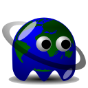
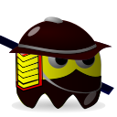

к Квесту! Идея WebQuest: Мастер
 Придумывает несколько задач Задача - это или какая-то страничка, или целый домен в интернете Дает некоторые подсказки для участников Стартует квест и приглашает друзей Игрок
 Присоединяется к квесту Смотрит подсказки Пытается разгадать все загадки Выигрывает! Технические детали: Серверная часть Node.JS (powered by Google V8) Хранит информацию о текущих квестах.
Отслеживает ход выполнения квеста. Google Chrome Расширение Позволяет как создавать квесты, так и участвовать.
После начала квеста отслеживает посещения страниц.
В случае отгадки посылает серверу сообщение.
Проект с открытым исходным кодом, был придуман
на Google Chrome Hackaton 2011. Буду рад услышать все предложения и замечания,
 Шибанов Валентин.
Шибанов Валентин. http://olostan.name/
olostan@gmail.com
Исходный код доступен на
https://github.com/olostan/chromequest
Презентация сделанная с помощью
https://github.com/olostan/jacss